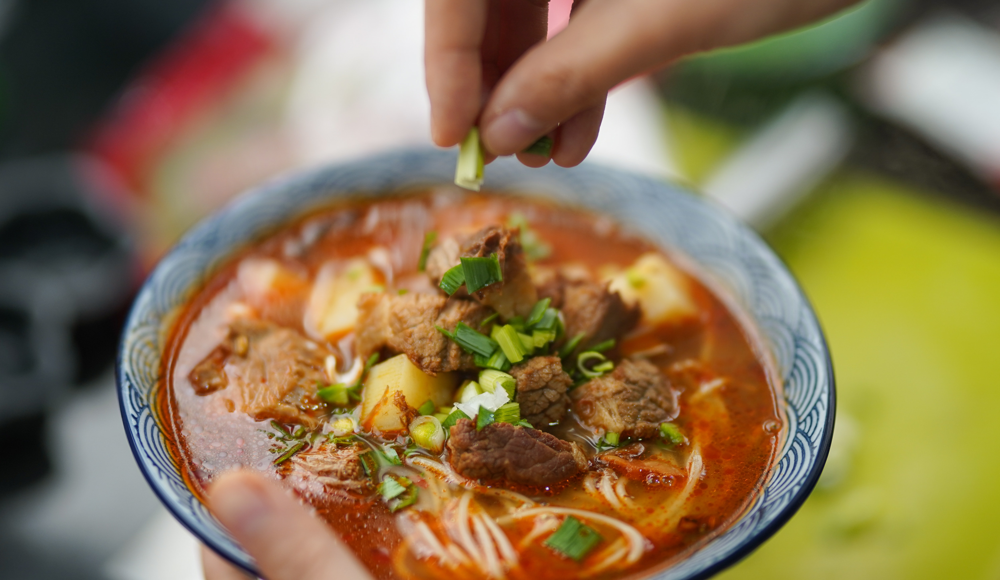
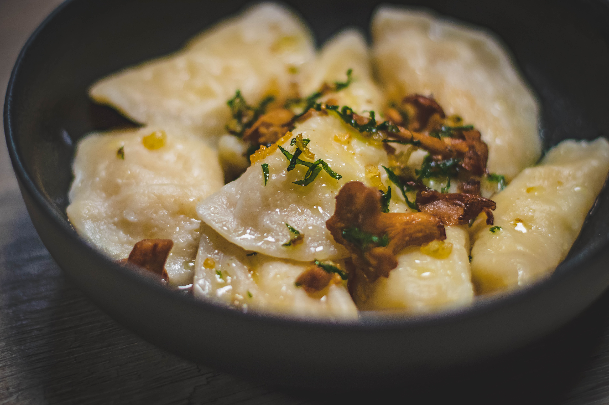

<!DOCTYPE html>
<html>
  <head>
    <meta charset="utf-8" />
    <title>Examen 2</title>
    <meta name="viewport" content="width=device-width, initial-scale=1.0" />
    <link rel="stylesheet" href="css/bootstrap-grid.css" />
    <link rel="stylesheet" href="css/main.css" />
    <link rel="preconnect" href="https://fonts.googleapis.com" />
    <link rel="preconnect" href="https://fonts.gstatic.com" crossorigin />
    <link rel="preconnect" href="https://fonts.googleapis.com" />
    <link rel="preconnect" href="https://fonts.gstatic.com" crossorigin />
    <link
      href="https://fonts.googleapis.com/css2?family=Inter&family=Yuji+Syuku&display=swap"
      rel="stylesheet"
    />
  </head>
</html>
<body>
  <header>
    <div class="nav">
      <a href="#">Notre carte</a>
      <a href="#">Horaires</a>
      <a href="#">Réservation</a>
    </div>
    
    <p class="center-text hide-mobile">
      Le goût demande qu'à être redécouvert, laissez vous tenter !
    </p>
  </header>
  <main>
    <p class="center-text show-mobile">
      Le goût demande <br />qu'à être redécouvert,<br />laissez vous tenter !
    </p>
    <div class="buttons">
      <a class="gold-button center-text" href="">Réserver</a>
    </div>
    <h2 class="center-text different-h2">
      Nos délicieuses sélections du moment
    </h2>
    <div class="container">
      <div class="card">
        
        <h3>Ramen Tonkotsu Authentique</h3>
        <p>
          Un bol fumant de nouilles épaisses dans un bouillon de porc richement
          parfumé, garni de tranches de porc fondant, d'œuf mariné à la
          perfection et de ciboulette croustillante.
        </p>
      </div>
      <div class="card">
        
        <h3>Crevettes Tempura Gourmandes</h3>
        <p>
          Crevettes jumbo enrobées d'une pâte légère et croustillante,
          accompagnées d'une sauce dip exquise.
        </p>
      </div>
      <div class="card">
        
        <h3>Tataki de Bœuf Fondant</h3>
        <p>
          Bœuf légèrement saisi, tranché finement et agrémenté d'une marinade
          savoureuse pour une expérience tendre et pleine de saveurs.
        </p>
      </div>
    </div>
    <h2 class="center-text">Horaires</h2>
    <div class="container center-text">
      <div class="row">
        <div class="col-sm-12 col-md-2">
          <p class="">Lun-ven <br />08:00-23:00</p>
        </div>
        <div class="col-sm-12 col-md-2 offset-md-3">
          <p>Samedi <br />09:00-23:00</p>
        </div>
        <div class="col-sm-12 col-md-2 offset-md-3">
          <p>Dimanche <br />Fermé</p>
        </div>
      </div>
    </div>
    <div class="galerie">
      
      
      
      
      
      
    </div>
    <div class="buttons">
      <a class="gold-button center-text" href="">Notre carte</a>
    </div>
    <p class="bg-gradient center-text">
      Le Kintsu reprend une tradition japonaise qui consiste à rendre quelque
      chose de brisé, plus beau et plus fort.<br /><br />Dans notre restaurant
      vous serez accueillis dans une ambiance chaleureuse et accueillante.<br /><br />Notre
      carte aux goûts variés fera voyager vos papilles et les réconcilier avec
      vous-même.
    </p>
  </main>
  <footer>
    <div class="reservation-container">
      <div class="row">
        <div class="col-12 col-md-7">
          <h2 class="white-h2">Réservation</h2>
          <div>
            <p>Votre adresse mail</p>
          </div>
          <div>
            <p>Nombre de personnes</p>
            <div class="flex-triangles">
              
            </div>
          </div>
          <div>
            <p>Date</p>
            <div class="flex-triangles">
              
            </div>
          </div>
          <div>
            <p>Heure</p>
            <div class="flex-triangles">
              
            </div>
          </div>
          <div>
            <a href="" class="button">Envoyer</a>
          </div>
        </div>
      </div>
    </div>
    <div class="footer-container">
      <div class="container">
        <div class="row">
          <div class="col-12 col-md-8">
            <a href="tel:0041 22 123 45 67">+41 22 123 45 67</a><br /><br />
            <a href="mailto:contact@restaurant-kintsu.ch"
              >contact@restaurant-kintsu.ch</a
            >
            <div class="address-div">
              <p class="address-p">123 Rue du Mont Blanc <br />1200 Genève</p>
              <a
                href="https://www.google.com/maps/place/Rue+du+Mont-Blanc+123%2F1200,+1201+Gen%C3%A8ve/@46.2093891,6.1407003,17z/data=!3m1!4b1!4m5!3m4!1s0x478c65279eb17a75:0xb0d5a2fd9db8ee4a!8m2!3d46.2093891!4d6.1432752?entry=ttu"
                ></a>
            </div>
          </div>
          <div class="col-12 col-md-4 social-div">
            <h4>Suivez-nous sur</h4>
            <div class="social-icons-div">
              <a href=""
                ></a>
              <a href=""
                ></a>
              <a href=""
                ></a>
              <a href=""
                ></a>
            </div>
            <p class="copyright">
              © Copyright 2023 Kintsu - created by Serena Voccia
            </p>
          </div>
          <div class="footer-container-2">
            <div class="row"></div>
          </div>
        </div>
      </div>
    </div>
  </footer>
</body>
